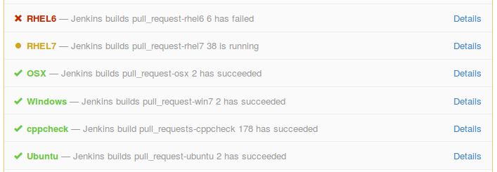
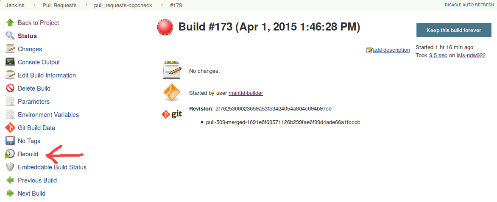

The Automated Build Process¶
Contents
Summary¶
If your changes break the master builds in any way, on any platform, then it is your responsibility to fix the error immediately!
The Details¶
You should follow the Mantid Git Workflow. When you open a pull request (or commit to an already open pull request) the automated build process will start. There will be a different build for each platform/job. A status will appear for each job in the pull request.
The status for each build will be either pending, success or failed.
To see the details of a particular build in Jenkins click on Details next to the status. To restart a build, if it failed with a spurious error not related to your code changes, then you can restart that particular build by selecting Rebuild in Jenkins. Then press rebuild again on the next screen while not changing any of the parameters. If you don’t have permission to restart builds in Jenkins you will have to ask someone who does.
Other Notes¶
The build will fail if it cannot be cleanly merged with master.
Leeroy will check every 10 minutes for any missed builds, should the GitHub hooks fail to activate or the build server was down when the pull request was opened.
The pull request builder we are using is called Leeroy.
You can find a list of all the pull request Jenkins jobs at here.
Master Pipeline¶
The master pipeline
is a series of jobs that periodically run against code on the master branch.
Their purpose is to provide reasonable assurance that the code currently in
master is usable in its current state.
The main tasks carried out by the pipeline are, for each supported platform:
- Build Mantid and installers (
master_clean-PLATFORM) - Run automated testing (
master_clean-PLATFORM,master_systemtests-PLATFORM,master_doctests) - Deploy installers to nightly download locations (
master_deploy)
The pipeline view in Jenkins shows the order of dependency between these jobs.
The most upstream jobs (i.e. master_clean-PLATFORM) are triggered to start
at midnight UTC assuming there were changes pushed to the master branch
since the last time they ran.